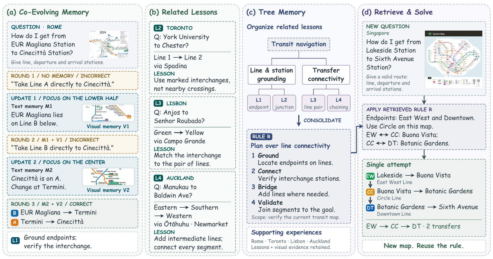
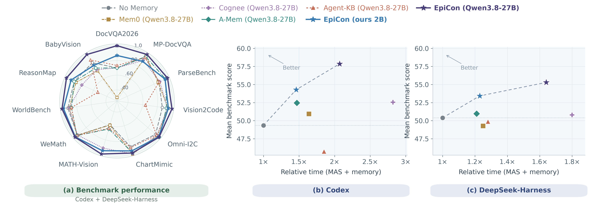

Co-evolve memory
The Memory Controller jointly revises textual guidance and supporting image regions using the question, answer, and execution trace. An adaptive gate decides when visual memory should be included.
Collective learning · Multimodal memory
One agent’s experience.
A shared resource for many.
Refine text and visual evidence together. Consolidate lessons into a shared bank.
Reuse experience across harnesses and backbones—without changing host model parameters.
Abstract
Agents can learn from past executions, but enabling different agents to reuse and build on one another’s experience remains challenging. We introduce EpiCon, a shared multimodal memory framework for agent collective learning without updating host model parameters. EpiCon links question-level memory evolution to a persistent experience bank through two independently trained 2B models: a memory controller and a tree self-organizer. The controller jointly refines textual guidance and visual evidence across attempts and selectively includes visual memory. The self-organizer consolidates lessons hierarchically and retrieves experience and rules for new problems. We evaluate EpiCon on eleven benchmarks spanning four multimodal task domains, using two harnesses and multiple backbones. A frozen bank improves other systems even with a single solving attempt. Experience contributed by another harness raises the original system's macro-average score by 2.1 to 3.2 points across eleven benchmarks. Across four host configurations, the 2B variant improves macro-average scores by 1.7 to 4.9 points over No Memory and reduces memory-operation time by 67% to 74% relative to backbone-sized memory models.
01 / Method
The Memory Controller jointly revises textual guidance and supporting image regions using the question, answer, and execution trace. An adaptive gate decides when visual memory should be included.
The Tree Self-Organizer places, merges, splits, and consolidates lessons into a hierarchy of experience and reusable rules. The memory harness validates and executes these operations.
A new system retrieves relevant experience from the shared bank. The host keeps its own harness and backbone, with no host parameter updates.

02 / Video overview
03 / Evaluation
4,538 questions across document understanding, visual-to-code generation, vision-grounded math, and general visual-language reasoning.
| Memory setting | Mean ↑ | DocVQA2026 | MP-DocVQA | ParseBench | Vision2Code | Omni-I2C | ChartMimic | MATH-Vision | WeMath | WorldBench | ReasonMap | BabyVision | Time · MAS | Time · memory | Tokens · MAS | Tokens · memory |
|---|---|---|---|---|---|---|---|---|---|---|---|---|---|---|---|---|
| No Memory | 49.3 | 15.7 | 79.5 | 57.1 | 53.0 | 66.2 | 66.4 | 20.4 | 81.0 | 49.2 | 40.1 | 14.2 | 1.00 | 0.00 | 1.00 | 0.00 |
| Mem0 | 50.9 | 1.4 | 81.6 | 61.9 | 61.3 | 70.6 | 78.0 | 24.4 | 80.6 | 48.6 | 39.6 | 12.2 | 1.33 | 0.31 | 1.23 | 0.11 |
| Cognee | 52.6 | 14.3 | 73.7 | 60.1 | 61.5 | 69.9 | 78.1 | 44.2 | 78.2 | 51.2 | 35.4 | 11.5 | 1.16 | 1.66 | 1.11 | 0.75 |
| A-Mem | 52.5 | 12.9 | 80.2 | 66.3 | 60.0 | 72.3 | 78.6 | 25.4 | 81.8 | 45.4 | 40.6 | 13.5 | 1.23 | 0.24 | 1.27 | 0.81 |
| Agent-KB | 45.7 | 11.4 | 78.6 | 59.5 | 25.8 | 67.4 | 69.8 | 25.2 | 80.8 | 45.0 | 24.1 | 15.6 | 1.54 | 0.31 | 1.12 | 0.14 |
| EpiCon (ours 2B) | 54.3 | 18.6 | 66.1 | 67.3 | 59.9 | 71.4 | 75.2 | 45.2 | 84.2 | 52.4 | 41.5 | 15.3 | 1.16 | 0.30 | 1.04 | 0.67 |
| EpiCon (backbone) | 57.9 | 22.9 | 83.5 | 68.5 | 61.7 | 73.0 | 79.3 | 48.6 | 85.4 | 53.8 | 43.4 | 16.3 | 1.15 | 0.92 | 1.03 | 0.64 |
| Memory setting | Mean ↑ | DocVQA2026 | MP-DocVQA | ParseBench | Vision2Code | Omni-I2C | ChartMimic | MATH-Vision | WeMath | WorldBench | ReasonMap | BabyVision | Time · MAS | Time · memory | Tokens · MAS | Tokens · memory |
|---|---|---|---|---|---|---|---|---|---|---|---|---|---|---|---|---|
| No Memory | 44.0 | 5.7 | 46.2 | 43.3 | 51.7 | 65.9 | 65.6 | 25.8 | 85.0 | 45.4 | 31.6 | 17.7 | 1.00 | 0.00 | 1.00 | 0.00 |
| Mem0 | 43.0 | 7.1 | 54.0 | 33.4 | 51.2 | 65.1 | 62.2 | 29.2 | 86.2 | 44.4 | 27.8 | 12.2 | 1.40 | 0.53 | 1.24 | 0.12 |
| Cognee | 40.1 | 4.3 | 49.9 | 27.6 | 54.6 | 49.0 | 63.7 | 37.4 | 72.4 | 42.2 | 27.4 | 12.8 | 0.92 | 7.23 | 1.07 | 1.02 |
| A-Mem | 45.1 | 8.6 | 55.5 | 37.0 | 54.9 | 68.6 | 63.1 | 29.8 | 88.0 | 44.6 | 31.6 | 13.9 | 1.23 | 0.39 | 1.31 | 0.97 |
| Agent-KB | 41.3 | 5.7 | 51.4 | 27.4 | 52.8 | 62.1 | 45.9 | 26.2 | 87.2 | 46.8 | 32.5 | 16.3 | 1.41 | 0.31 | 1.04 | 0.13 |
| EpiCon (ours 2B) | 48.2 | 8.6 | 58.8 | 44.2 | 54.3 | 67.5 | 66.7 | 38.8 | 87.8 | 53.2 | 32.1 | 18.1 | 1.33 | 0.47 | 1.01 | 0.74 |
| EpiCon (backbone) | 51.0 | 8.6 | 59.6 | 45.8 | 57.1 | 67.8 | 66.4 | 57.6 | 88.4 | 54.2 | 36.3 | 19.1 | 1.20 | 1.56 | 1.02 | 0.67 |
| Memory setting | Mean ↑ | DocVQA2026 | MP-DocVQA | ParseBench | Vision2Code | Omni-I2C | ChartMimic | MATH-Vision | WeMath | WorldBench | ReasonMap | BabyVision | Time · MAS | Time · memory | Tokens · MAS | Tokens · memory |
|---|---|---|---|---|---|---|---|---|---|---|---|---|---|---|---|---|
| No Memory | 50.4 | 14.3 | 79.5 | 52.4 | 53.7 | 61.4 | 65.3 | 42.2 | 88.8 | 54.0 | 22.6 | 20.1 | 1.00 | 0.00 | 1.00 | 0.00 |
| Mem0 | 49.3 | 11.4 | 80.5 | 46.1 | 54.9 | 61.0 | 68.8 | 38.8 | 90.0 | 52.2 | 21.2 | 17.0 | 1.10 | 0.15 | 1.87 | 0.41 |
| Cognee | 50.8 | 15.7 | 76.6 | 50.9 | 54.0 | 60.6 | 68.3 | 53.6 | 91.2 | 50.2 | 19.3 | 18.4 | 0.95 | 0.85 | 1.33 | 2.70 |
| A-Mem | 51.0 | 17.1 | 80.6 | 55.4 | 53.7 | 63.4 | 65.5 | 43.6 | 89.6 | 52.2 | 22.2 | 17.4 | 1.09 | 0.12 | 2.01 | 2.98 |
| Agent-KB | 49.9 | 20.0 | 79.5 | 50.5 | 52.5 | 62.6 | 63.8 | 42.6 | 90.4 | 52.6 | 13.7 | 20.5 | 1.13 | 0.15 | 1.51 | 0.64 |
| EpiCon (ours 2B) | 53.4 | 18.6 | 81.8 | 53.6 | 56.9 | 63.5 | 65.2 | 56.6 | 92.2 | 57.4 | 24.5 | 17.4 | 1.08 | 0.15 | 1.06 | 1.92 |
| EpiCon (backbone) | 55.3 | 20.0 | 82.9 | 57.0 | 61.2 | 62.8 | 65.4 | 58.2 | 91.8 | 58.2 | 27.4 | 23.3 | 1.07 | 0.57 | 1.10 | 2.88 |
| Memory setting | Mean ↑ | DocVQA2026 | MP-DocVQA | ParseBench | Vision2Code | Omni-I2C | ChartMimic | MATH-Vision | WeMath | WorldBench | ReasonMap | BabyVision | Time · MAS | Time · memory | Tokens · MAS | Tokens · memory |
|---|---|---|---|---|---|---|---|---|---|---|---|---|---|---|---|---|
| No Memory | 34.9 | 10.0 | 2.7 | 35.6 | 51.4 | 55.4 | 32.8 | 16.0 | 91.0 | 49.6 | 27.4 | 11.5 | 1.00 | 0.00 | 1.00 | 0.00 |
| Mem0 | 34.2 | 7.1 | 9.1 | 35.7 | 51.6 | 51.6 | 32.6 | 11.4 | 88.6 | 49.2 | 26.4 | 12.5 | 0.93 | 0.20 | 1.80 | 0.38 |
| Cognee | 33.1 | 5.7 | 0.5 | 37.7 | 49.7 | 44.8 | 29.9 | 12.6 | 89.4 | 49.8 | 30.7 | 12.8 | 0.82 | 2.23 | 1.22 | 3.06 |
| A-Mem | 35.6 | 7.1 | 10.8 | 38.8 | 51.0 | 52.4 | 33.0 | 20.2 | 89.6 | 52.2 | 24.1 | 12.8 | 0.87 | 0.12 | 1.99 | 3.02 |
| Agent-KB | 33.4 | 7.1 | 1.8 | 36.1 | 50.0 | 51.5 | 29.5 | 13.0 | 89.2 | 47.8 | 25.5 | 15.6 | 0.86 | 0.18 | 1.38 | 0.60 |
| EpiCon (ours 2B) | 36.6 | 5.7 | 2.0 | 41.0 | 52.9 | 57.5 | 34.3 | 18.8 | 91.2 | 54.0 | 28.8 | 16.3 | 0.86 | 0.14 | 1.08 | 1.70 |
| EpiCon (backbone) | 37.5 | 11.4 | 0.7 | 46.3 | 54.3 | 56.8 | 32.9 | 18.4 | 92.2 | 53.2 | 29.2 | 17.4 | 0.86 | 0.53 | 1.09 | 2.25 |
Scores: higher is better. Mean is computed as an equal-weight average of the 11 displayed benchmark scores. Time and token costs are normalized to the corresponding No Memory MAS cost; MAS and memory costs are separate. Baseline memory models match the selected host backbone and operate zero-shot. EpiCon 2B uses two independently trained 2B models. Scroll horizontally to view all columns.
Download main results as CSV ↓
04 / Collective learning
Codex switches from Qwen3.8-27B to Gemma4-31B while reusing the frozen bank.
DeepSeek-Harness reuses experience built by Codex, with Qwen3.8-27B.
Experience added by another harness improves the original contributor’s macro-average.
All gains are macro-average score points over 11 benchmarks, as reported in the paper. Transfer compares EpiCon 2B with No Memory; the return-to-contributor comparison uses original vs. evolved banks.
Bank source: Codex with Qwen3.8-27B. Each target makes one solving attempt with a frozen bank and no question-level updates.
| Memory setting | Mean ↑ | DocVQA2026 | MP-DocVQA | ParseBench | Vision2Code | Omni-I2C | ChartMimic | MATH-Vision | WeMath | WorldBench | ReasonMap | BabyVision |
|---|---|---|---|---|---|---|---|---|---|---|---|---|
| No Memory | 44.0 | 5.7 | 46.2 | 43.3 | 51.7 | 65.9 | 65.6 | 25.8 | 85.0 | 45.4 | 31.6 | 17.7 |
| EpiCon (ours 2B) | 47.2 | 5.7 | 60.4 | 45.3 | 53.8 | 67.8 | 68.2 | 33.0 | 85.0 | 47.8 | 34.4 | 18.1 |
| Memory setting | Mean ↑ | DocVQA2026 | MP-DocVQA | ParseBench | Vision2Code | Omni-I2C | ChartMimic | MATH-Vision | WeMath | WorldBench | ReasonMap | BabyVision |
|---|---|---|---|---|---|---|---|---|---|---|---|---|
| No Memory | 50.4 | 14.3 | 79.5 | 52.4 | 53.7 | 61.4 | 65.3 | 42.2 | 88.8 | 54.0 | 22.6 | 20.1 |
| EpiCon (ours 2B) | 54.6 | 18.6 | 79.1 | 65.7 | 59.2 | 63.3 | 68.7 | 56.0 | 90.6 | 52.2 | 26.4 | 20.5 |
The original and contributing harnesses each use 1,000 disjoint construction questions. Evaluation uses 4,388 questions disjoint from both construction sets. Both bank conditions use one solve. This comparison measures bank evolution and expansion together; individual benchmarks do not improve uniformly.
| Memory setting | Mean ↑ | DocVQA2026 | MP-DocVQA | ParseBench | Vision2Code | Omni-I2C | ChartMimic | MATH-Vision | WeMath | WorldBench | ReasonMap | BabyVision |
|---|---|---|---|---|---|---|---|---|---|---|---|---|
| Original bank | 53.5 | 18.6 | 66.1 | 63.4 | 59.9 | 71.4 | 75.2 | 45.2 | 84.2 | 52.4 | 38.3 | 14.3 |
| Evolved bank | 55.7 | 18.6 | 80.3 | 58.9 | 61.3 | 70.9 | 76.7 | 45.4 | 88.4 | 55.2 | 40.1 | 16.8 |
| Memory setting | Mean ↑ | DocVQA2026 | MP-DocVQA | ParseBench | Vision2Code | Omni-I2C | ChartMimic | MATH-Vision | WeMath | WorldBench | ReasonMap | BabyVision |
|---|---|---|---|---|---|---|---|---|---|---|---|---|
| Original bank | 53.4 | 18.6 | 81.8 | 52.3 | 56.9 | 63.5 | 65.2 | 56.6 | 92.2 | 57.4 | 23.5 | 19.3 |
| Evolved bank | 56.6 | 20.0 | 82.7 | 65.9 | 58.7 | 69.2 | 72.1 | 53.4 | 91.2 | 57.6 | 29.6 | 22.3 |
05 / Analysis
Tree memory organizes and consolidates lessons from the same source questions, improving all four reported scores over a flat bank.
| Memory setting | ParseBench | Vision2Code | MATH-Vision | BabyVision |
|---|---|---|---|---|
| Flat | 52.2 | 57.5 | 43.6 | 13.2 |
| Tree | 67.3 | 59.9 | 45.2 | 15.3 |
With Codex and GPT-5.6-Luna, the fixed 2B components and frozen bank improve all four reported benchmarks, without target-specific retraining.
| Memory setting | ParseBench | Vision2Code | MATH-Vision | BabyVision |
|---|---|---|---|---|
| No Memory | 63.8 | 65.8 | 51.2 | 11.1 |
| EpiCon (ours 2B) | 66.5 | 67.5 | 57.2 | 14.6 |
These experiments disable historical retrieval. No Memory uses one attempt; memory-enabled settings allow up to five attempts. Original question images remain available in every setting. Both harnesses use Qwen3.8-27B.
| Memory setting | ParseBench | Vision2Code | MATH-Vision | BabyVision | Time · MAS | Time · memory | Tokens · MAS | Tokens · memory |
|---|---|---|---|---|---|---|---|---|
| No Memory (1 attempt) | 57.1 | 53.0 | 20.4 | 14.2 | 1.00 | 0.00 | 1.00 | 0.00 |
| MC (ours 2B; ≤5 attempts) | 59.8 | 55.9 | 41.2 | 17.7 | 2.16 | 0.23 | 2.40 | 0.96 |
| MC (Qwen3.8-27B; ≤5 attempts) | 63.1 | 56.6 | 49.6 | 13.9 | 2.57 | 0.23 | 3.07 | 0.95 |
| Memory setting | ParseBench | Vision2Code | MATH-Vision | BabyVision | Time · MAS | Time · memory | Tokens · MAS | Tokens · memory |
|---|---|---|---|---|---|---|---|---|
| No Memory (1 attempt) | 57.1 | 53.0 | 20.4 | 14.2 | 1.00 | 0.00 | 1.00 | 0.00 |
| Text only | 58.7 | 55.7 | 27.2 | 16.0 | 1.43 | 0.28 | 1.23 | 0.61 |
| Frozen visual · always | 55.2 | 55.0 | 40.6 | 16.0 | 2.82 | 0.43 | 3.00 | 0.94 |
| Frozen visual · adaptive | 57.1 | 55.9 | 41.0 | 16.3 | 2.02 | 0.25 | 2.42 | 0.94 |
| Evolving visual · always | 55.3 | 55.2 | 41.0 | 16.3 | 2.89 | 0.44 | 3.02 | 0.93 |
| Evolving visual · adaptive | 59.8 | 55.9 | 41.2 | 17.7 | 2.16 | 0.23 | 2.40 | 0.96 |
| Memory setting | ParseBench | Vision2Code | MATH-Vision | BabyVision | Time · MAS | Time · memory | Tokens · MAS | Tokens · memory |
|---|---|---|---|---|---|---|---|---|
| No Memory (1 attempt) | 52.4 | 53.7 | 42.2 | 20.1 | 1.00 | 0.00 | 1.00 | 0.00 |
| MC (ours 2B; ≤5 attempts) | 55.1 | 57.8 | 51.4 | 23.3 | 2.10 | 0.13 | 2.44 | 3.23 |
| MC (Qwen3.8-27B; ≤5 attempts) | 64.5 | 65.8 | 61.6 | 35.1 | 2.47 | 0.16 | 2.65 | 3.25 |
| Memory setting | ParseBench | Vision2Code | MATH-Vision | BabyVision | Time · MAS | Time · memory | Tokens · MAS | Tokens · memory |
|---|---|---|---|---|---|---|---|---|
| No Memory (1 attempt) | 52.4 | 53.7 | 42.2 | 20.1 | 1.00 | 0.00 | 1.00 | 0.00 |
| Text only | 51.8 | 55.1 | 47.4 | 21.2 | 1.33 | 0.13 | 1.25 | 2.37 |
| Frozen visual · always | 51.2 | 57.5 | 50.2 | 20.5 | 2.52 | 0.21 | 3.13 | 3.75 |
| Frozen visual · adaptive | 52.8 | 57.3 | 50.8 | 21.2 | 1.95 | 0.13 | 2.41 | 3.58 |
| Evolving visual · always | 52.1 | 57.0 | 51.8 | 21.2 | 2.53 | 0.21 | 3.15 | 3.72 |
| Evolving visual · adaptive | 55.1 | 57.8 | 51.4 | 23.3 | 2.10 | 0.13 | 2.44 | 3.23 |
06 / Citation
@misc{zeng2026epicon,
title = {EpiCon: Collective Agent Learning through Co-Evolving Multimodal Memory},
author = {Ziyun Zeng and Hang Hua and Shaden Alshammari and Rogerio Feris and William T. Freeman and Jiebo Luo},
year = {2026},
archivePrefix = {arXiv},
eprint = {TODO},
note = {Preprint; arXiv identifier to be added}
}